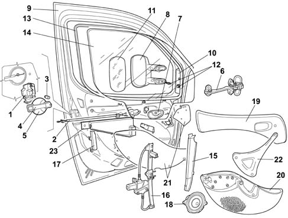
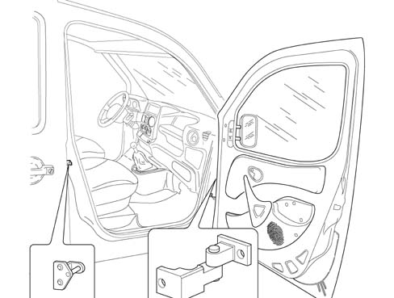
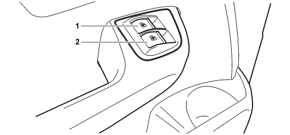
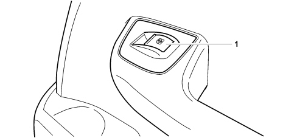

INTRODUCTION - PASSENGER COMPARTMENT FRONT SIDE DOORS
- Path
- Descriptions > 70 FITTINGS > 7005 PASSENGER COMPARTMENT FRONT SIDE DOORS > INTRODUCTION - PASSENGER COMPARTMENT FRONT SIDE DOORS
- Kind
- system description
- Applies to
- engines: 1.4 8v, 1.6 16v, 1.3 JTD 16V, 1.9 JTD 8V; production: da 12/03; only with equipment: MY 2005
- Interactive page
- https://sloeber94.github.io/elrnDB-fDbl/en/#/223000259
Applies to: engines: 1.4 8v, 1.6 16v, 1.3 JTD 16V, 1.9 JTD 8V; production: da 12/03; only with equipment: MY 2005
The front doors, produced through traditional pressing processes, feature passive safety and anti-theft security solutions.
There are fitted with anti-intrusion and waist reinforcement bars to contain side impacts; reinforcements at the hinges and panels without sharp edges.
The lock has a new control lever.
The door opening/closing linkage is protected by new design anti-intrusion panels that prevent access to them and to the lock from the outside.
The rear view mirrors may be equipped with either electrical or mechanical adjustment devices.
The window opening mechanism, which may be electrical or manual, is the guided cable type and the operating buttons are located in the middle of the dashboard.
The glass seal incorporates the glass scraper thereby guaranteeing an excellent seal against aerodynamic wind noises.
Exploded view of the front door.

1, Lock
2, Door interior opening rod
3, Lock barrel
4, Exterior handle
5, Exterior handle support
6, Door check strap
7, Interior and safety opening handle
8, Rear view mirror
9, Door frame
10, Mirror control cover
11, Reflector
12, Mirror adjustment device
13, Window seal
14, Glass
15, Front guide
16, Window opening mechanism
17, Rear guide
18, Speaker
19, Upper door panel
20, Front door pocket
21, Water shield protection (opaline)
22, Interior grab handle
23, Anti-break in partition
ADJUSTMENT
To adjust the front door, adjust the hinges secured with bolts on both the door and the front pillar. Working on the hinges one at a time, it is possible to adjust both the alignment of the gaps and the load on the door seal.
To increase or decrease the load on the seal, adjust the hinges secured to the door.
To align the gaps, adjust the hinges fastened to the pillar.
The lock striker can only be used to recover the load on the seal on the rear part of the door.

7005M FRONT DOOR ELECTRIC WINDOWS
Electric windows (doblò version)
The vehicle is equipped with two controls for the travel of the windows inside the doors.
There are two controls underneath, one on the driver's side and one on the passenger side:

1 - Driver's electric window switch
2 - Passenger side electric window switch

1 - Passenger side electric window switch
The two controls are located on the respective doors; thanks to the conformation of the internal electrical circuit the driver's side control allows the movement of the window, up and down for both windows, whilst the passenger side control only works exclusively for the passenger door.
The two controls are enabled when the ignition key is in the INT position; in addition, the two electric window motors are protected by two fuses located in the junction unit under the dashboard.
There are two different coloured connectors for the driver's side control to differentiate between: the one for the driver's side window which is white and the one for the passenger side window which is black.
The connector for the passenger side control is white.